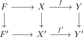
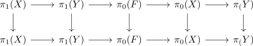

functorality of the long exact sequence of a serre fibration
Proposition
Let

be a diagram, where
- $f,f'$ are serre fibrations
- $F \rightarrow F'$ is the induced map on fibres
Then the homotopy group functor resp. path component functor induce a morphism of exact sequences of sets
